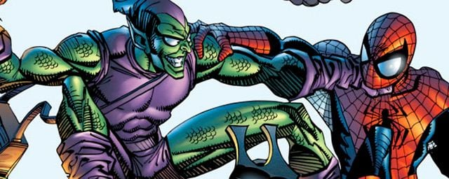
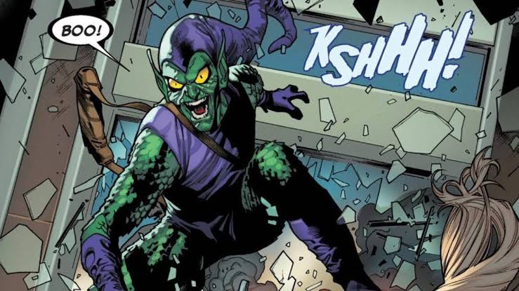
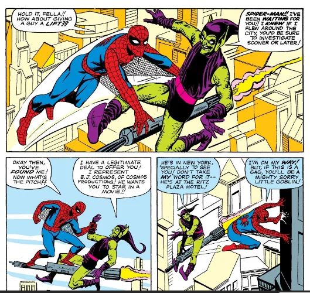
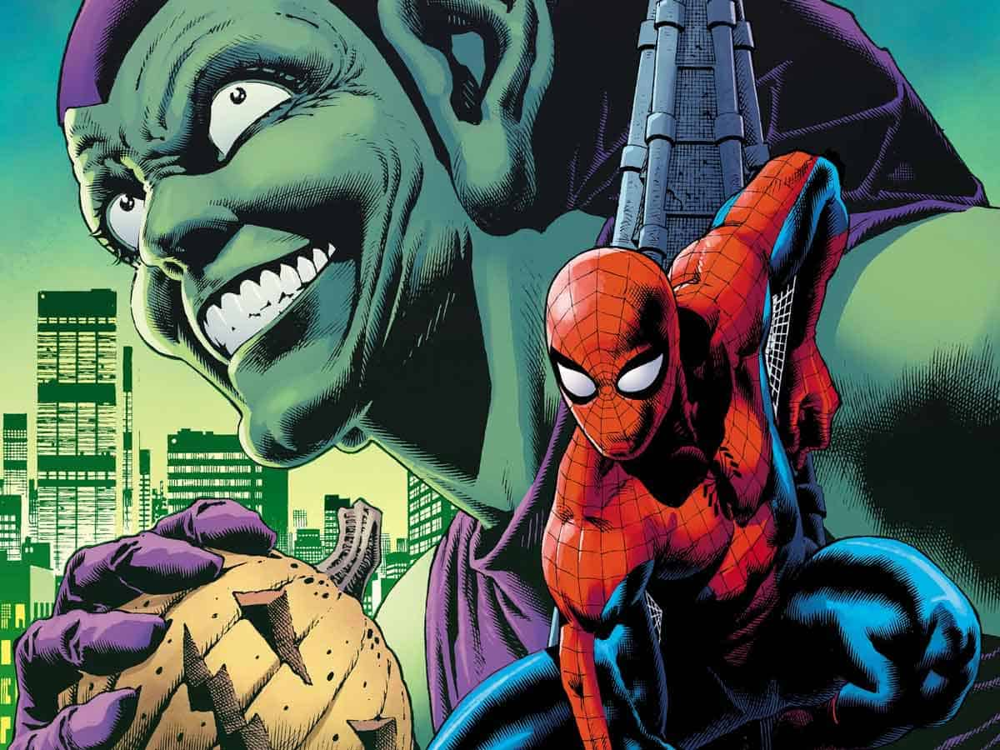
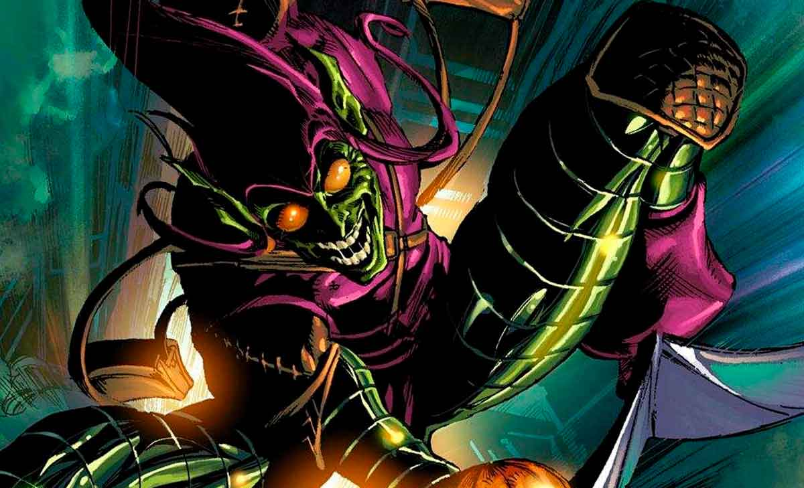

Spider-Man|
El Hombre de Arena |
Electro|
Doctor Octopus|
Mysterio|

¿Quién es el Duende Verde? (Perfil Completo)
El Duende Verde (Green Goblin) es considerado unánimemente el archienemigo definitivo y más despiadado de Spider-Man. Aunque varias personas han portado esta identidad a lo largo del tiempo (incluyendo a Harry Osborn, Bart Hamilton y Phil Urich), la versión original, más peligrosa e icónica es la de Norman Virgil Osborn.
Norman Osborn es un multimillonario sociópata, genio científico y fundador de Oscorp Industries, una megacorporación química y tecnológica con sede en Nueva York. A diferencia de otros criminales motivados únicamente por el dinero o el control territorial, Osborn está impulsado por una sed insaciable de poder, megalomanía y una obsesión enfermiza por destruir la vida de Peter Parker tanto a nivel superheroico como personal.

El Origen Biológico y la Fórmula Duende:
- El suero de la discordia (Fórmula Goblin): En un intento por consolidar el control total de Oscorp, Norman robó los apuntes y la fórmula química perfeccionada por su antiguo socio, el Dr. Mendel Stromm. La fórmula buscaba incrementar exponencialmente la fuerza física, la velocidad y la capacidad cerebral del ser humano.
- La explosión en el laboratorio: Durante la preparación del compuesto químico en las instalaciones de Oscorp, la sustancia inestable tornó a color verde y explotó directamente en el rostro de Norman. El químico alteró su estructura celular y su ADN, otorgándole una fuerza física capaz de rivalizar con la de Spider-Man (levantando hasta 9 toneladas), reflejos sobrehumanos, un factor de curación regenerativo y un intelecto de nivel genio. Sin embargo, el costo fue catastrófico: el suero destruyó su estabilidad mental, provocándole un trastorno de identidad disociativo (doble personalidad) y una psicosis megalómana permanente.
- Surgimiento del villano: Adoptó la figura del Duende Verde para infundir terror en el inframundo criminal de Nueva York. Combinó sus recursos militares e industriales para crear un arsenal avanzado de tecnología bélica, enfocado en dominar las familias del crimen organizado y erradicar a Spider-Man.
Creadores Detrás del Personaje y sus Aportaciones:
- Stan Lee (Guionista y Editor): Concibió el concepto del villano y desarrolló la trágica dinámica personal en la que la identidad secreta del antagonista resultaba ser el padre del mejor amigo de Peter Parker (Harry Osborn), convirtiendo el conflicto en un melodrama familiar devastador.
- Steve Ditko (Dibujante y Co-creador): Diseñó el aterrador e icónico traje de tela verde y morado con máscara grotesca de rasgos duendescos, la bolsa de trucos dimensionada, las bombas de calabaza y el vehículo volador que originalmente conceptualizó como una escoba voladora mecánica antes de convertirlo en el famoso Planeador Duende.

Su debut oficial se produjo en el cómic The Amazing Spider-Man #14 (publicado en julio de 1964).
Arsenal Tecnológico y Equipamiento de Combate
El Duende Verde compensa la agilidad de Spider-Man utilizando un inventario militar altamente especializado diseñado por Oscorp:
- El Planeador Duende (Goblin Glider): Vehículo volador con forma de murciélago gigante impulsado por un motor de propulsión a chorro. Alcanza velocidades de hasta 300 km/h, posee una maniobrabilidad extrema y está armado con ametralladoras integradas, lanzamisiles, cuchillas retráctiles e instrumentos incendiarios.
- Bombas Calabaza (Pumpkin Bombs): Explosivos de mano con forma de calabaza de Halloween. Existen variantes incendiarias, granadas de fragmentación, bombas de gas lacrimógeno, gas anestésico y cargas de conmoción capaces de atravesar acero blindado.
- Muro de Murciélagos de Cuchilla (Razor Bats): Cuchillas automáticas voladoras con forma de murciélago que persiguen los objetivos para cortar o detonar al impacto.
- Guantes con Rayos Electroestáticos: Capaces de descargar pulsos eléctricos de alto voltaje directamente desde la yema de sus dedos.
- Gas Anulador del Sentido Arácnido: Un compuesto químico volátil diseñado por Osborn que bloquea temporalmente el sexto sentido precognitivo de Spider-Man, dejándolo vulnerable a emboscadas.

¿Cómo y por qué surgió la idea? (El Debate Creativo)
La concepción del personaje estuvo marcada por una famosa diferencia de visiones entre Stan Lee y Steve Ditko sobre la identidad secreta del personaje:
- La propuesta mística de Stan Lee: Lee sugirió inicialmente que el villano fuera un demonio místico o una criatura antigua desenterrada por un equipo de filmación de cine dentro de un sarcófago egipcio.
- La visión realista de Steve Ditko: Ditko rechazó la idea mística y prefirió una explicación fundamentada en la ciencia ficción urbana. Defendió que debía ser un hombre de negocios ordinario disfrazado, cuya identidad fuera un misterio tanto para el lector como para el propio Spider-Man.
- El misterio de la revelación: Ditko mantuvo la identidad del personaje en secreto durante dos años de publicación. La revelación definitiva ocurrió en The Amazing Spider-Man #39 (1966), cuando Norman Osborn descubre primero que Peter Parker es Spider-Man, lo secuestra y le revela su propia cara tras la máscara.
Eventos Canónicos e Impacto Histórico en Marvel Comics
El Duende Verde es responsable de los arcos narrativos más oscuros en la vida de Spider-Man:
- La Muerte de Gwen Stacy (The Amazing Spider-Man #121 - 1973): En el momento más trágico de la Edad de Plata de los cómics, el Duende Verde secuestra a la novia de Peter y la arroja desde lo alto del puente George Washington. Aunque Spider-Man intenta atraparla con su telaraña, el impacto frena abruptamente su caída rompiéndole el cuello. Este evento cambió la historia de los cómics para siempre.
- La Muerte de Norman y su Regreso: En el número posterior (#122), Norman muere atravesado por su propio planeador fuera de control mientras intentaba empalar a Spider-Man. Años más tarde se reveló que la Fórmula Goblin le permitió sobrevivir y regenerarse en secreto desde Europa.
- Reinado Oscuro (Dark Reign) e Iron Patriot: En la década de 2000, Norman Osborn se posiciona como un héroe público tras la invasión Skrull, asume el control de S.H.I.E.L.D. (renombrándolo H.A.M.M.E.R.), crea a los *Dark Avengers* utilizando la armadura de **Iron Patriot** y lidera el asedio a Asgard.
Conclusión y Legado
El Duende Verde se consolidó como el antagonista definitivo de Spider-Man al romper el molde del villano convencional de la época. Su impacto no solo radica en su peligrosidad física o su distintivo diseño visual de colores verde y morado (elegidos para reflejar corrupción y malevolencia), sino en cómo transformó el conflicto del héroe en algo profundamente personal, demostrando que la mayor amenaza para Peter Parker no venía del espacio ni de la magia, sino de la locura humana impulsada por la ciencia y la ambición sin límites.
